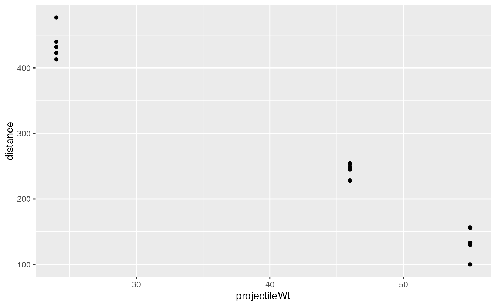
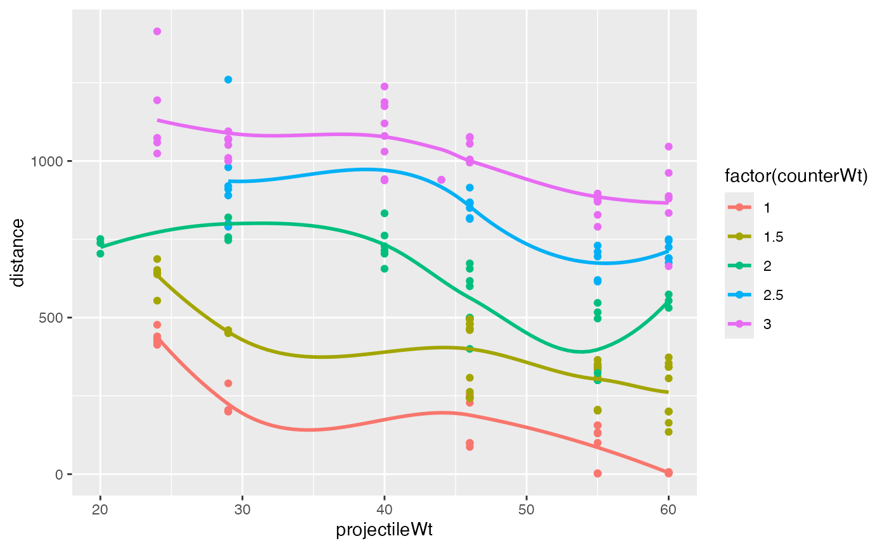

Measurements from an experiment that involved firing projectiles with a small trebuchet under different conditions.
Format
Data frames with the following variables.
- object
the object serving as projectile
beanbig washerbbigWashBWBfoosegolfMWBSWBtennis ballwood- projectileWt
weight of projectile (in grams)
- counterWt
weight of counter weight (in kg)
- distance
distance projectile traveled (in cm)
- form
a factor with levels
abBcdescribing the configuration of the trebuchet.
Details
Trebuchet1 and Trebuchet2 are subsets of Trebuchet restricted
to a single value of counterWt
Examples
data(Trebuchet); data(Trebuchet1); data(Trebuchet2)
#> Warning: data set ‘Trebuchet’ not found
gf_point(distance ~ projectileWt, data = Trebuchet1)

gf_point(distance ~ projectileWt, data = Trebuchet2)
gf_point(distance ~ projectileWt, color = ~ factor(counterWt), data = Trebuchet) %>%
gf_smooth(alpha = 0.2, fill = ~factor(counterWt))
#> `geom_smooth()` using method = 'loess'
#> Warning: pseudoinverse used at 60.18
#> Warning: neighborhood radius 14.18
#> Warning: reciprocal condition number 5.0801e-17
#> Warning: There are other near singularities as well. 196
#> Warning: pseudoinverse used at 28.845
#> Warning: neighborhood radius 26.155
#> Warning: reciprocal condition number 9.6658e-17
#> Warning: There are other near singularities as well. 676
